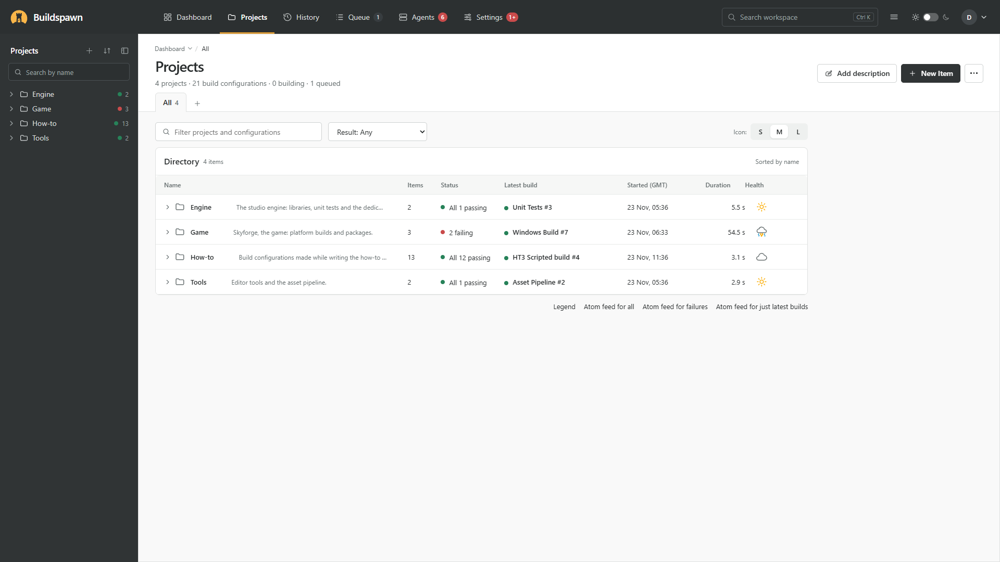

The project directory
The Projects page lists every project and build configuration with its latest result. Filter it by name or by result, open projects in place, and choose how large the icons are.

When to use it
Use the directory as your start page: to see at once what fails, to find a build configuration, and to open a build. For a short list of the things everybody must see, use the Dashboard.
Open the directory
Click Projects in the top bar. The title line counts what is there, for example 4 projects · 21 build configurations · 0 building · 1 queued.
The Directory table
| Column | What it shows |
|---|---|
| Name | A project (folder icon) or a build configuration (its platform icon), with its description. Click the arrow before a project to open it and see what is inside. Click a name to open its page. Click a column heading to close every open project again. |
| Items | For a project, how many items are directly inside it. |
| Status | For a project, how many build configurations fail, for example 2 failing, or All 12 passing. For a build configuration, its last result: Success, Failed, Unstable, Running or Not built. |
| Latest build | The newest build, with its number. For a project, the newest build of anything inside it. |
| Started (GMT) | When that build started. |
| Duration | How long it took. |
| Health | A weather icon for the share of recent builds that passed. A project shows the worst health of what is inside it. Hover the icon for the percent. |
The heading line of the table says Sorted by name, or Custom order when administrators put the items in their own order. See A tour of the interface.
Filter by name
- Click Filter projects and configurations and type part of a name, for example
windows. - The table shows only the matching rows. No project or configuration matches. appears when nothing fits.
- Clear the box to see everything again.
Filter by result
The list beside the filter box shows one result at a time:
| Choice | Shows |
|---|---|
| Result: Any | Everything. This is the default. |
| Result: Failed | Build configurations whose last build failed. |
| Result: Unstable | Builds that passed but have failing tests. |
| Result: Success | Builds that passed. |
| Result: Running | Build configurations that are building now. |
| Result: Not built | Build configurations that never ran. |
You can use the name filter and the result together, for example Result: Failed and console to find failing console builds.
Icon size
The buttons S, M and L beside Icon: set how large the icons and rows are: small (16 pixels), medium (24) or large (32). Your choice is kept in your browser.
Views
The tab All lists everything. A view is an extra tab with only the items you pick, for example one for the console builds. Click the + beside the tabs to add a view. The list of build configurations there has a search box, Select all and Clear and a count. Build Chains opens the page of build chains: build configurations that depend on each other.
Legend and feeds
Under the table, Legend explains every status icon and health icon. The three links beside it are Atom feeds. See Atom feeds.
The root project page
The page of the root project (Root project) is a second way in. It shows Configurations and subprojects in a table with Name, Result, Latest build, Duration and Health, and a Filter box. A project that is paused or archived says so. Hide archived projects hides the archived ones. Its tabs are Overview, Build History, Perforce roots, Credentials, Build settings and Settings. Templates are listed in their own card below.
Problems and fixes
| Problem | What to do |
|---|---|
| A project or build configuration is missing. | You see only what you may see. Ask a project administrator for the project viewer role. Archived projects are hidden: use Hide archived projects on the root project page to toggle them. |
| The filter finds nothing. | The result list may still say Failed. Set it to Result: Any. |
Related pages
- History
- The Dashboard
- Projects: how to build the tree.